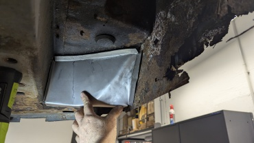
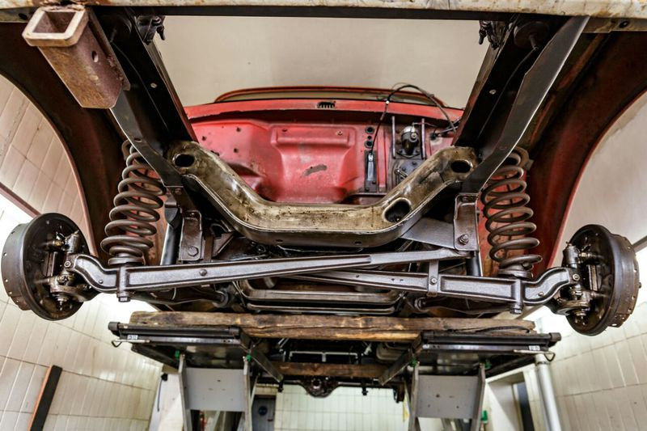
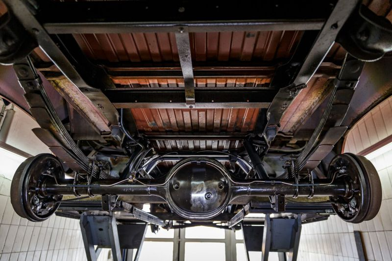
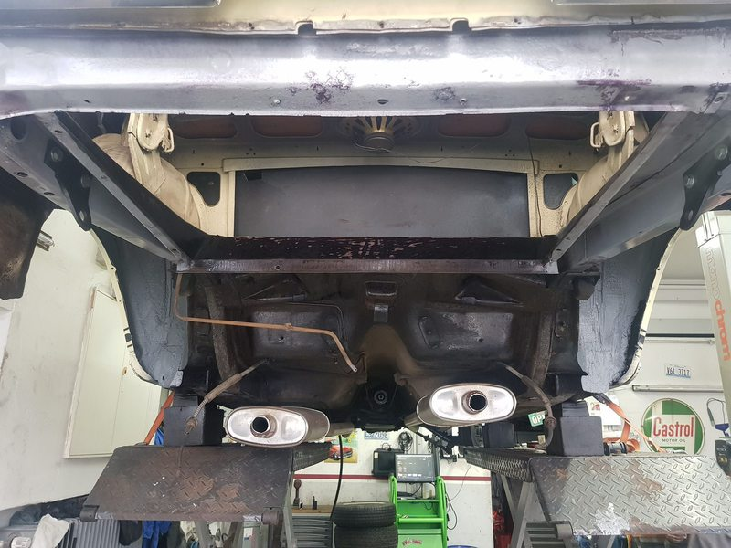
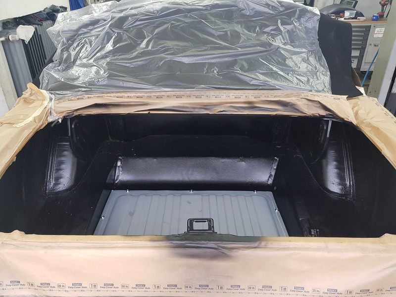
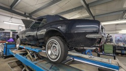

Jeep Grand Cherokee
Instandsetzung und Aufbereitung eines Jeep Grand Cherokee in unserer Werkstatt.
Von der Blecharbeit bis zur kompletten Karosserie-Restaurierung – mit Erfahrung und Gefühl fürs Detail.
Unsere Arbeit
Ob Unfallschaden, Rostsanierung oder komplette Karosserie-Restaurierung eines Klassikers: In unserer Karosserie-Werkstatt bringen wir Fahrzeuge fachgerecht wieder in Form – von der Achsvermessung bis zur letzten Schweißnaht.




Referenzprojekte

Instandsetzung und Aufbereitung eines Jeep Grand Cherokee in unserer Werkstatt.

Karosseriebau und Restaurierung eines klassischen Chevrolet Camaro.
Karosseriebau an einem VW T4 – vom Blech bis zum fertigen Aufbau.
Karosseriebau am Camper-Van-Klassiker Ford E150 Econoline.
Bringen Sie es vorbei – wir schauen es uns gemeinsam mit Ihnen an und sagen Ihnen, was möglich ist.